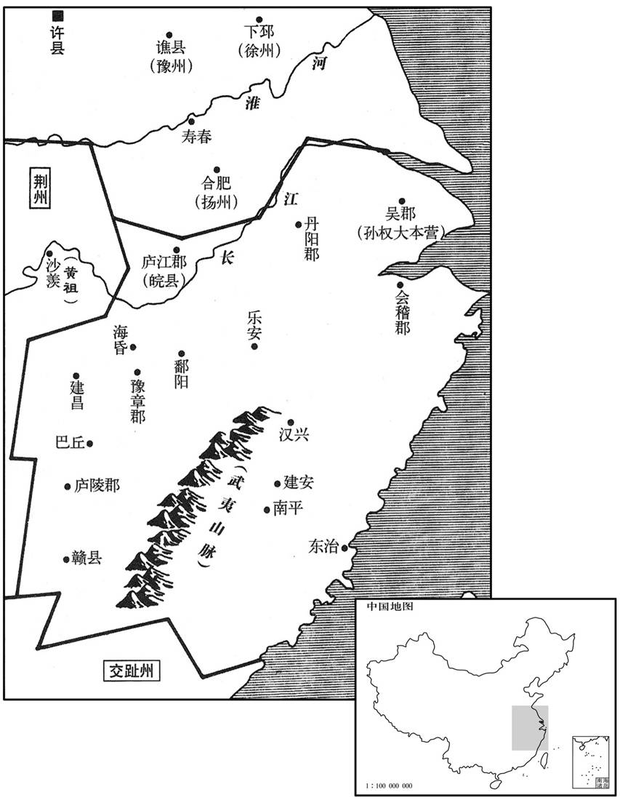

公元203年资治通鉴：本年记事、原文与白话对照
按原书编年位置阅读；追叙和史论不等于本年发生的事件。白话采用所据译本，缺译不以生成译文补齐。
卷64 · 本年记事
公元203年 · 汉孝献皇帝建安八年
八年〔（癸未、二○三）〕
上传原文的注释括号有异常，字符原样保留；无法可靠划分的段落默认全文显示。
本年事件索引（现代整理）

本年形势与背景参考图
春，二月，曹操攻黎阳，〔考异曰：魏志武纪作三月。今从范书袁绍传。又魏志绍传云：「谭、尚与太祖相拒黎阳，自二月至九月。」当云自九月至二月。〕与袁谭、袁尚战于城下，谭、尚败走，还邺。夏，四月，操追至邺，收其麦；〔考异曰：范书绍传曰：「尚逆击，破操军。」今从魏志绍传。余谓此诸葛孔明所谓偪于黎阳时也，必有破操军事，魏人讳而不书耳。〕诸将欲乘胜遂攻之，郭嘉曰：「袁绍爱此二子，莫适立也。〔适，丁历翻，主也。〕今权力相侔，各有党与，〔谓辛评、郭图等附谭，审配等附尚也。〕急之则相保，缓之则争心生。不如南向荆州〔荆州，刘表。〕以待其变；变成而后击之，可一举定也。」操曰：「善！」五月，操还许，留其将贾信屯黎阳。
春季，二月，曹操进攻黎阳，与袁谭、袁尚在黎阳城下展开大战，袁谭、袁尚败走，退回邺城。夏季，四月，曹操大军追到邺城，收割了地里的小麦。曹军将领都提出要乘胜攻打邺城，郭嘉说：“袁绍生前喜欢这两个儿子，没能决定让谁作继承人。如今，他们权力相等，各有党羽辅佐。情况危急，就相互援救；局势稍有缓和，就又会争权夺利。不如先向南进取荆州，等待他们兄弟内讧，然后再进攻，可以一举平定。”曹操说：“好！”五月，曹操回到许都，留部将贾信驻守黎阳。
谭谓尚曰：「我铠甲不精，故前为曹操所败。〔铠，可亥翻。败，补迈翻。〕今操军退，人怀归志，及其未济，出兵掩之，可令大溃，此策不可失也。」尚疑之，既不益兵，又不易甲。谭大怒，郭图、辛评因谓谭曰：「使先公出将军为兄后者，皆审配之谋也。」谭遂引兵攻尚，战于门外。〔邺城门外也。〕谭败，引兵还南皮。〔南皮县，属勃海郡。贤曰：今沧州县；章武有北皮亭，故此曰南皮。宋白曰：县道记云：景州之南皮，在郡东六十里。南皮县北有迎河，河之北有故皮城，是后汉勃海郡所理，与郡理城南北非远，中隔迎河故渎。〕
袁谭对袁尚说：“我的部下铠甲不够精良，所以先前被曹军击败。现在曹军撤退，人人思归，在他们未完全渡过黄河以前，出兵追击，可使他全军溃散，这种时机，万万不可错过。”袁尚疑心袁谭另有打算，既不增加他的兵马，也不肯给他部下更换铠甲。袁谭大怒，郭图、辛评乘机对袁谭说：“使已故袁公把你过继给哥哥的，全是审配的主意。”袁谭就率军进攻袁尚，在邺城门外大战起来，袁谭战败，率军退回南皮。
别驾北海王修，率吏民自青州往救谭。〔汉青州刺史治临菑。〕谭欲更还攻尚，修曰：「兄弟者，左右手也。譬人将鬬而断其右手，〔断，丁管翻。〕曰『我必胜』，其可乎﹖夫弃兄弟而不亲，天下其谁亲之！彼谗人离间骨肉以求一朝之利，愿塞耳勿听也。〔间，古苋翻。塞，悉则翻。〕若斩佞臣数人，复相亲睦，以御四方，可棋行于天下。」谭不从。谭将刘询起兵漯阴以叛谭，〔漯阴县，属平原郡。应劭曰：漯水，出东武阳东北入海。贤曰：县在漯水之南，故城在今齐州临邑县西。师古曰：漯，音他答翻。〕诸城皆应之。谭叹曰：「今举州皆叛，岂孤之不德邪！」王修曰：「东莱太守管统，虽在海表，此人不反，必来。」后十余日，统果弃其妻子来赴谭，妻子为贼所杀。谭更以统为乐安太守。〔汉末，乐安国除为郡。〕
袁谭的别驾、北海人王，率领官吏和百姓从青州来援救袁谭。袁谭打算再次进攻袁尚，王劝阻说：“兄弟之间的关系，好比是人的左、右手。假如上个人要与别人争斗，先砍断自己的右手，还说‘我一定能胜’，难道对吗？抛弃兄弟而不亲近，天下还有谁能亲近？那些进谗言的小人，离间别人的骨肉，只是为了追求眼前的一点小利，希望您塞住耳朵，不要听信。如果能下决心杀掉几个奸佞小人，与兄弟重相和睦，齐心协力，抵御四方，可以横行于天下。”袁谭不听。袁谭部将刘询在漯阴起兵，背叛袁谭，各城全都响应。袁谭叹息说：“如今全州都叛变，难道是我缺少恩德吗？”王说：“东莱郡太守管统，虽然远在海滨，但这个人不会反叛，一定前来追随。”又过了十余天，管统果然抛弃家眷来投奔袁谭，他的家眷被叛军杀死。袁谭又委任管统为乐安郡太守。
秋，八月，操击刘表，军于西平。〔西平县，属汝南郡。从郭嘉之谋也。〕
秋季，八月，曹操进攻刘表，大军驻扎西平。
袁尚自将攻袁谭，大破之，〔将，即亮翻。〕谭奔平原，婴城固守。〔前书音义曰：婴，谓以城自绕也。〕尚围之急，谭遣辛评弟毗诣曹操请救。
袁尚亲自统帅大军进攻袁谭，袁谭大败，逃到平原，据城固守。袁尚将城围住，发动猛攻。袁谭派辛评的弟弟辛毗到曹操那里求救。
刘表以书谏谭曰：「君子违难不适雠国，〔左传公山不狃之言。难，乃旦翻。〕交绝不出恶声，〔史记乐毅答燕惠王书之言。〕况忘先人之雠，弃亲戚之好，而为万世之戒，遗同盟之耻哉！〔表与袁绍同盟。好，呼到翻。遗，于季翻；下同。〕若冀州有不弟之傲，〔左传曰：段不弟。书曰：象傲。尚据冀州，故称之。〕仁君当降志辱身，以济事为务，事定之后，使天下平其曲直，不亦为高义邪！」又与尚书曰：「金、木、水、火以刚柔相济，然后克得其和，能为民用〔金能胜木，然执柯伐柯，非木无以成金斲削之利；水能胜火，然水在火上，非火无以成水烹饪之功。此类非一，可以概推也。〕青〔【章：甲十一行本，〔青」上有「今」字；乙十一行本同；孔本同；张校同。】〕州天性峭急，〔峭，七笑翻。谭据青州，故称之。〕迷于曲直。仁君度数弘广，绰然有余，当以大包小，以优容劣，先除曹操以卒先公之恨，〔卒，子恤翻。〕事定之后，乃议曲直之计，不亦善乎！若迷而不反，则胡夷将有讥诮之言，〔诮，才笑翻。〕况我同盟，复能戮力为君之役哉！此韩卢、东郭自困于前而遗田父之获者也。」〔淳于髡说齐威王曰：韩卢者，天下之俊犬也；东郭狻者，天下之狡兔也。韩卢逐东郭狻，腾山者五，环山者三，兔极于前，犬疲于后，犬兔俱疲，各死其处，田父见而获之，无劳苦而擅其功。今齐、魏相持，顿兵敝众，恐秦、楚乘其后而有田父之功也。〕谭、尚皆不从。
刘表写信劝袁谭说：“君子即使避难，也不会逃到敌国；即使与人绝交，也不会进行辱骂。况且你忘掉父亲的仇恨，抛弃了兄弟之情，而作出这种万世都会引以为戒的事情，使同盟之人都为你感到耻辱。如果袁尚有不尊重兄长的傲慢举动，你也该委曲求全，以大局为重。等到大局已定，再由天下人来评论曲直，不也是高风亮节吗？”刘表又给袁尚写信，说：“金、木、水、火四种物质，以刚柔互配，才能相辅相成，为人所用。袁谭天性急躁，不能明辨是非，你器量宽弘，包容他还绰绰有余，应当以大容小，以优容劣，先除去曹操，以了却你父亲的遗恨。等到大事已定，再来评论谁是谁非，不好吗？如果执迷不悟，则胡人夷人都会讥笑你们，何况我们这些盟友，还会再尽力为你作战吗！这正是韩卢狗和东郭兔互相追逐，先行自困，而耕田老农不劳而获的故事的再现！”袁谭、袁尚都不听刘表的劝解。
本段人物：乐毅
辛毗至西平见曹操，致谭意，群下多以为刘表强，宜先平之，谭、尚不足忧也。荀攸曰：「天下方有事，而刘表坐保江、汉之间，其无四方之志可知矣。袁氏据四州之地，带甲数十万，绍以宽厚得众心；使二子和睦以守其成业，则天下之难未息也。〔谓能为曹操患也。难，乃旦翻。〕今兄弟遘恶，〔「遘」，当作「构」。或曰：遘，遇也；谓以恶相遇也。〕其势不两全，若有所并则力专，力专则难图也；〔谓谭、尚若并于一，则能专力以御操，其势难图。〕及其乱而取之，天下定矣，此时不可失也。」操从之。
辛毗到西平拜见曹操，转达袁谭求救的请求。曹操部下官员多认为刘表势大，应当先消灭刘表，袁谭、袁尚自相残杀，不足忧虑。荀攸说：“目前，正是天下英雄争霸之机，而刘表坐守江、汉之间，可知他胸无占有四方的大志。袁氏家族占据四州之地，有兵马数十万，袁绍以宽厚而得民心，假如他的两个儿子和睦相处，共守已有的基业，则天下灾难不能平息。如今他们兄弟相争，势不两立，如果一个人吞并了另一个人，则力量就会集中起来，力量集中后，再想进取就困难了。应该乘他们相持不下时动手夺取，天下就可以平定了。这个机会不能失去。”曹操表示同意。
后数日，操更欲先平荆州，使谭、尚自相敝，辛毗望操色，知有变，以语郭嘉。〔语，牛倨翻。〕嘉白操，操谓毗曰：「谭必可信，尚必可克不﹖」〔不，读曰否。〕毗对曰：「明公无问信与诈也，直当论其势耳。袁氏本兄弟相伐，非谓他人间其间，乃谓天下可定于己也。〔能间，工苋翻。言袁氏兄弟相攻，其初计不谓他人能乘其间，乃谓并青冀为一，则可乘劫以定天下耳。〕今一旦求救于明公，此可知也。〔言其势穷。〕显甫见显思困而不能取，〔谭，字显思，尚，字显甫。〕此力竭也。兵革败于外，谋臣诛于内，〔谓逢纪、田丰等死也。〕兄弟谗朎，〔朎，馨泪翻；鬬也，很也，戾也。〕国分为二，连年战伐，介冑生虮虱，加以旱蝗，饥馑并臻；天灾应于上，人事困于下，民无愚智，皆知土崩瓦解，此乃天亡尚之时也。今往攻邺，尚不还救，即不能自守；还救，即谭踵其后。以明公之威，应困穷之敌，击疲敝之寇，无异迅风之振秋叶矣。〔秋叶易陨，况遇迅风乎。〕天以尚与明公，明公不取而伐荆州；荆州丰乐，〔乐，音洛。〕国未有衅。仲虺有言，『取乱侮亡』。〔见尚书。孔安国注曰：乱则耳之，有亡形则侮之。〕方今二袁不务远略而内相图，可谓乱矣；居者无食，行者无粮，可谓亡矣。朝不谋夕，民命靡继，而不缓之，欲待他年；他年或登，〔岁熟曰登。〕又自知亡而改修厥德，失所以用兵之要矣。今因其请救而抚之，利莫大焉。且四方之寇，莫大于河北，河北平，则六军盛而天下震矣。」〔观毗之言，非为谭请救也，劝操以取河北也。〕操曰：「善！」乃许谭平。
过了几天，曹操又打算先平定荆州，让袁谭、袁尚自相削弱。辛毗观察曹操脸色，知道他又改变主意，就去告诉郭嘉。郭嘉报告曹操，曹操对辛毗说：“袁谭是否一定可信？袁尚是否一定能被攻克？”辛毗说：“您不要问是否有许，只应看整个形势的发展变化。袁谭、袁尚兄弟相争，并未考虑到别人会乘机利用，只是认为天下可由自己平定。如今，袁谭向您求救，表明他已走投无路；袁尚看到袁谭陷入困境，却不能一举攻破袁谭，说明袁尚也已智穷力竭。他们的形势是军队在外战败，谋士在内被杀，兄弟内讧，土地割裂，连年征战，将士的甲胄里都长出虱子。再加上旱灾与蝗灾，造成饥荒，天灾人祸，上下交应，百姓无论智慧或是愚笨，都已知道袁氏统治将要土崩瓦解，这正是上天灭亡袁尚的时机。如今您去攻打邺城，袁尚不撤军回救，邺城就不能自守；袁尚返回救援，袁谭就会在后攻击。以您的军威，对付穷困之敌，进击疲惫之军，犹如疾风去吹落秋叶一般。上天把袁尚赏赐给您，您却不去进攻袁尚，而要讨伐荆州。荆州富裕安乐，没有机会可供您利用。从前仲虺说：‘敌人有内乱则夺取，敌人有覆亡迹象则侵入。’如今，袁氏兄弟不顾长远大局，自相攻击，可称为内乱；居民饥饿，行人无粮，可称为覆亡的迹象。黄河以北的百姓朝不虑夕，性命全无保障，而您不立即去安抚，却要等到以后。以后如果赶上丰收，袁氏兄弟又醒悟到已濒于危亡而痛改前非，则您就将失去用兵的机会。现在，利用袁谭求救而去援助，对您是最有利的。而且您的敌人，没有比占据黄河以北的袁氏更强大的了。您平定黄河以北后，就军威大盛，震动天下了。”曹操说：“对！”于是，答应出兵救援袁谭。
冬，十月，操至黎阳。尚闻操渡河，乃释平原还邺。尚将吕旷、高翔畔归曹操，谭复阴刻将军印以假旷、翔。操知谭诈，乃为子整聘谭女以安之，而引军还。〔操本有伐尚因而取谭之心，况复有诱旷、翔之事乎！聘其女为弓妇以安之，所谓将欲取之，必姑与之也。复，扶又翻；下同。为，于伪翻。〕
冬季，十月，曹操进军到黎阳。袁尚听到曹军渡过黄河的消息，解除对平原的包围，撤回邺城。袁尚部将吕旷、高翔背叛袁尚，投降曹操。袁谭又暗中刻好将军的印信，送给吕旷、高翔。曹操知道袁谭并非真心归降，便为儿子曹整娶袁谭的女儿为妻，以安袁谭之心，然后，曹操班师回朝。
孙权西伐黄祖，破其舟军，惟城未克，而山寇复动。〔丹阳、豫章、庐陵，皆有山越。〕权还，过豫章，使征虏中郎将吕范平鄱阳、会稽，〔吕范传止云鄱阳，孙权传则有「会稽」二字，以地里考之，「会稽」二字衍。〕荡寇中郎将程普讨乐安，〔晋志及宋志，鄱阳郡有乐安县，吴立。建安十五年，孙权始分豫章立鄱阳郡。荡寇中郎将，权所置也。〕建昌都尉太史慈领海昏，〔和帝永元十六年，分海昏立建昌县，属豫章郡。孙策分海昏、建昌六县，以太史慈为建昌都尉，治海昏。〕以别部司马黄盖、韩当、周泰、吕蒙等守剧县令长，〔剧，艰也，甚也，言其地当山越之要，最为艰剧之甚者也。〕讨山越，悉平之。建安、汉兴、南平民作乱，聚众各万余人，〔建安，本冶县地，会稽南部都尉治焉。建安中，分东侯官置建安县，用汉年号也，今建宁府地。汉兴县，沈约曰：汉末立，吴更名吴兴。南平县亦汉末立，晋武平吴，改曰延平，今南剑州地。时皆属南部都尉。〕权使南部都尉会稽贺齐进讨，皆平之，复立县邑，料出兵万人；拜齐平东校尉。〔会，工外翻。复，如字。料，音聊。校，户教翻。〕
孙权西征黄祖，大破黄祖水军，只是未能攻克黄祖据守的城池。正在这时，山区的土著居民山越再度起兵反抗，孙权只好撤军。孙权经过豫章郡，派征虏中郎将吕范平定鄱阳、会稽，荡寇中郎将程普进讨乐安，由建昌都尉太史慈兼管海昏县事务，委任别部司马黄盖、韩当、周泰、吕蒙等分别兼任山越聚剧县的县令和县长，分别率军讨伐山越，完全平定了山越的反抗。建安、汉兴、南平三县百姓起来反抗，每县都聚集起一万余人。孙权派南部都尉、会稽人贺齐讨伐，全部平定。重建县城，挑选出精兵一万余人，晋升贺齐为平东校尉。